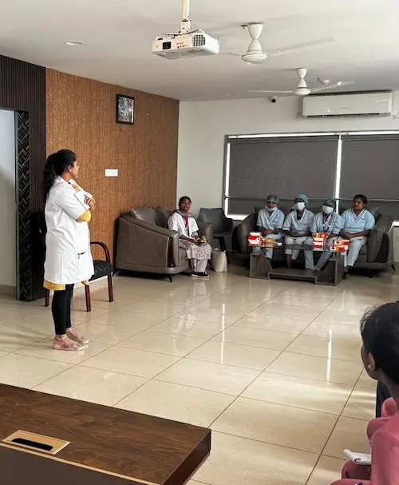
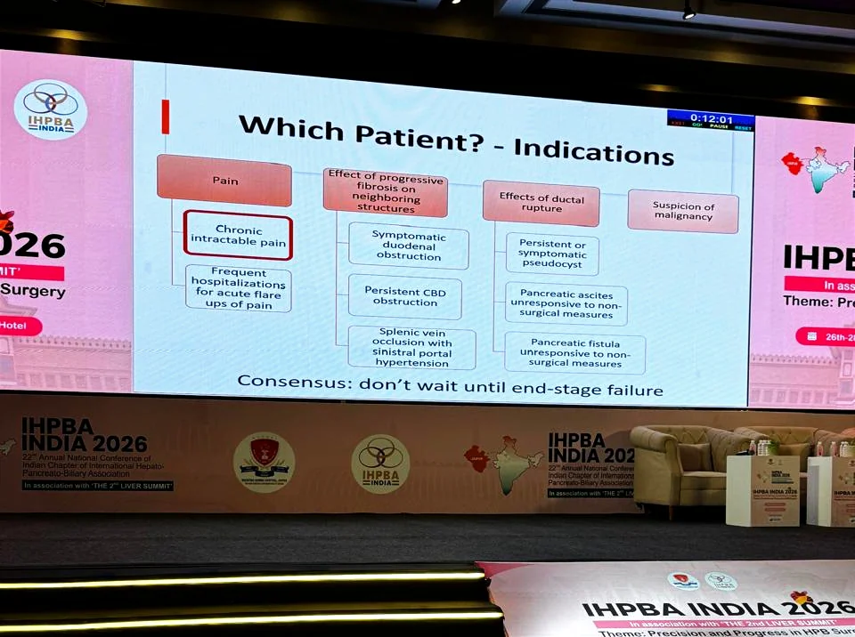

2023 - 2024
Ethicon Fellow 2023
Fellowship in HPB Surgical Oncology
Tata Memorial Hospital, Mumbai
A leading Surgical Gastroenterologist and HPB & GI Surgical Oncologist, known for combining high-end surgical precision with ethical, outcome-driven, and patient-friendly care. She completed her MBBS, went on to do DNB General Surgery, and later specialised through DNB Surgical Gastroenterology. She also completed a highly competitive HPB & GI Surgical Oncology Fellowship, and is console-trained in robotic surgery on the Da Vinci Xi platform.
Gained knowledge and achieved academic excellence at esteemed institutions
Tata Memorial Hospital, Mumbai
Console-trained on Da Vinci Xi
Medanta – The Medicity, Gurugram
Bangalore Baptist Hospital, Bangalore
“Dr. B. Ramamurthi” Gold Medal (National Level, June 2014)
Maulana Azad Medical College (MAMC), New Delhi
Lok Nayak Hospital
Aligned with global best practices through focused mentorships at world-renowned centers
Minimal access pancreatic surgery under the mentorship of Prof. Yuichi Nagakawa
Department of Pancreato-Biliary Surgery, Japanese Foundation of Cancer Research under the mentorship of Prof. Yosuke Inoue
Department of General Visceral & Transplant Surgery, University of Heidelberg under the mentorship(s) of Prof. Markus Buechler & Prof. Thilo Hackert
Department of HPB & Transplant Surgery, Beaujon Hospital under the mentorship(s) of Prof. Alain Sauvanet & Prof. Mickael Lesurtel
A trajectory defined by high-volume surgical units and specialized oncology care
BLK Max Super Speciality Hospital, Pusa Road, Rajendra Place, New Delhi – 110005
GI Surgery and GI Oncology
Tata Memorial Hospital, Mumbai, Maharashtra
Pancreatic and Gastric Surgery, Hepatobiliary and GI Services
Medanta – The Medicity, Sector 38, Gurugram, Haryana, India
Department of GI Surgery, GI Oncology and Minimal Access Surgery
Medanta – The Medicity, Sector 38, Gurugram, Haryana, India
Department of GI Surgery, GI Oncology and Minimal Access Surgery
Medanta – The Medicity
Department of GI Surgery, GI Oncology and Minimal Access Surgery
G B Pant Hospital
Department of Surgical Gastroenterology
Bangalore Baptist Hospital
Lok Nayak Hospital and Maulana Azad Medical College
Professional recognition and commitments
Dedication to excellence and contribution to society

Dr. Kapoor's vision is to make world-class pancreatic, biliary, liver, and GI cancer surgery accessible to families in tier-2 and tier-3 regions, without compromising safety or outcomes.
She is intensely focused on:
Dr. Kapoor stands for calm leadership, transparent communication, and long-term healing—ensuring every patient receives not only excellent surgery, but a complete, confident recovery journey.
World-class pancreatic, biliary, liver and GI cancer surgery should be accessible to every family, in every city, without compromising safety or outcomes.Dr. Deeksha Kapoor · CEO & Medical Head, Advitya Healthcares
Recognition of commitment to surgical precision, academic research, and clinical excellence on both national and international platforms
DNB General Surgery — Batch of June 2014
Awarded for securing the highest marks nationally in the Diplomate of National Board examinations, marking a benchmark of academic and surgical excellence.
Young Investigator’s Travel Grant Award – APA/IAP/CPA/JPS, Hawaii
Topic: Real World Evidence of Portal Vein Resections with Pancreatectomy – Multicentre Indian Study (PVR-IM)
HBP Surgery Week, Korea (Virtual)
Topic: Can we predict the need of supplemental nutrition after pancreatoduodenectomy?
Korean Society for Surgical Metabolism and Nutrition
Paper: Impact of psoas muscle area and density on postoperative outcomes following pancreatoduodenectomy
“Asymptomatic leaks following anterior resection”
Bangalore Baptist Hospital
Surgical Society of Bangalore, 2014
Topic: Blunt Abdominal Trauma
State Meetings of Surgical Society, 2013
Fostering research integrity, mentoring the next generation of surgeons, and contributing to the global scientific community through editorial leadership.
Contributing to the scientific integrity of major international journals through rigorous peer review.
A comprehensive record of talks and lectures delivered, participation in national and international conferences, and scientific and research paper and poster presentations



Selected Past Talks
Advancing surgical gastroenterology through rigorous clinical studies, real-world evidence, and predictive modeling for better patient outcomes
The PRIME Study is a retrospective multicenter analysis from 11 high-volume Indian centers (2015–2023) evaluating outcomes of porto-mesenteric vein resection (PVR) performed with pancreatectomy and creating predictive nomograms for 90-day postoperative mortality (POM) and major complications (MC).
This “Author Reflections” piece explains how pancreatic surgery with porto-mesenteric vein resection (VR) evolved from early skepticism to wider acceptance as outcomes improved and systemic therapy advanced.
This ASOVisual Abstract in Annals of Surgical Oncology presents the PRIME Study, focused on porto-mesenteric vein resections performed with pancreatectomy and the creation of predictive clinical nomograms for postoperative outcomes.
This study examines perceived gender bias and career disparities among gastrointestinal (GI) and hepato-pancreato-biliary (HPB) surgeons in India, highlighting how workplace culture and institutional factors can affect training, advancement, and leadership representation.
This prospective, single-centre observational study (August 2022–July 2023) from a tertiary hospital in India evaluated post-operative nutritional supplementation compliance and adequacy in 32 Indian patients undergoing bariatric surgery (21 sleeve gastrectomy, 11 Roux-en-Y gastric bypass).
This original research reports a retrospective observational experience (Oct 2003–Dec 2020) focused specifically on severe Strasberg type E4 postcholecystectomy bile duct injuries, where the right and left hepatic ducts are separated at the hilum and outcomes after standard repair are often poor.
This prospective observational study (June 2021–March 2023) assessed whether the Modified Frailty Index (mFI) and preoperative hand grip strength (HGS) can predict outcomes after pancreaticoduodenectomy (PD) in 180 consecutive patients.
This retrospective analysis of 1422 consecutive pancreatoduodenectomies (2014–2023) externally validated the ISGPS two-factor, four-tier “high-risk pancreas” classification for predicting clinically relevant postoperative pancreatic fistula (CRPF), and specifically tested its performance in periampullary tumours (P-amps).
Primary aorto-duodenal fistula (PADF) is a rare aortoenteric fistula between the abdominal aorta and the duodenum, typically requiring urgent diagnosis (UGIE/CT angiography) and prompt surgical or endovascular repair.
This prospective observational study (June 2021–March 2023) evaluated whether a multimodal prehabilitation program improves muscle mass and postoperative outcomes in locally advanced, resectable rectal cancer patients receiving long-course neoadjuvant therapy, compared with a historical cohort without prehabilitation.
This retrospective analysis of a prospectively maintained NET clinic database (Jan 2018–Dec 2021) included 100 patients with metastatic, well-differentiated Grade 1 gastro-entero-pancreatic neuroendocrine tumours (Ki-67/MiB-1 <2%) to identify factors influencing progression-free survival (PFS) and overall survival (OS).
This multi-institutional Indian cohort study (MIPPAP) evaluated whether adjuvant therapy improves outcomes after upfront resection for high-risk periampullary adenocarcinomas (T3/T4 and/or node-positive), an area with limited and conflicting prospective evidence.
This study notes that diverticular disease—traditionally common in the West—appears to be increasing in India, and it aims to address the relative lack of Indian data on the surgical management of sigmoid diverticular disease.
This conference report summarizes a focused meeting held on 6 August 2023 at AIIMS Delhi (under IASG and IHPBA) attended by 26 women GI and HPB surgeons, aimed at openly discussing gender-related challenges and corrective measures.
The multicentre Indian Pancreatic & Periampullary Adenocarcinoma Project (MIPPAP) analyzed upfront resected pancreatic ductal adenocarcinoma (PDAC) patients from 8 academic institutions in India (Jan 2015–Jun 2019) to describe presentation, practice patterns, and survival outcomes.
This retrospective study analyzed 457 patients who underwent pancreatoduodenectomy (2013–2021) to compare whether CT-assessed pancreatic gland morphology or body composition better predicts postoperative outcomes.
This single-centre retrospective study analyzed 562 pancreaticoduodenectomies (2013–2020) to identify predictors of 30-day postoperative mortality (POM), with special focus on preoperative aminotransferases (AST/ALT).
This article reports a cross-sectional online survey (25-question questionnaire) designed to assess public awareness and perceptions of clinical research/clinical trials (CR/CT) and willingness to participate.
This retrospective study of 562 consecutive pancreatoduodenectomies (2013–2020) evaluated which preoperative/intraoperative factors predict the need for postoperative nutritional support and help guide selective placement of feeding access (tube jejunostomy).
This case series describes 10 consecutive post-COVID-19 patients managed at a tertiary centre in India (Mar 20–Jun 10, 2021) who developed severe gastrointestinal complications: 2 bowel gangrene and 8 bowel perforation.
This single-centre retrospective study evaluated short-term postoperative outcomes of hand-assisted laparoscopic surgery (HALS) for left-sided colorectal malignancies in 580 patients operated between March 2010 and March 2020.
This retrospective cohort study evaluated whether age affects the feasibility and outcomes of an enhanced recovery protocol (ERP) after pancreatoduodenectomy, analyzing 548 patients managed with ERP between March 2013 and September 2020.
This 10-year study (2010–2020) from Medanta Hospital, Gurugram, reviewed 34 patients operated for solid pseudopapillary neoplasm (SPN), a rare pancreatic tumour predominantly affecting young women.
This study from Medanta Hospital, Gurugram, India, reviewed 314 planned gastrointestinal surgeries performed during the COVID-19 pandemic (March–July 2020), nearly half of which were cancer operations.
This retrospective analysis of a prospectively maintained database (May 2016 to March 2018) evaluated how often patients deviated from an enhanced-recovery clinical care pathway after pancreatoduodenectomy and whether those deviations predicted discharge by postoperative day (POD) 8 and 90-day unplanned readmission.
This letter to the editor responds to Mercan et al.’s April 2020 study linking CT-defined sarcopenia to higher postoperative complications after elective surgery for gastrointestinal cancers.
This prospective study aimed to establish Indian, sex-specific CT-based cut-offs for sarcopenia because muscle indices vary by ethnicity and Indian reference values were lacking.
This study from Medanta Hospital, Gurugram, India, analysed the direct inpatient costs of treating colorectal (bowel) cancer using keyhole (laparoscopic) surgery in 391 patients treated between 2015 and 2018.
A comprehensive list of authored chapters in prominent medical textbooks and surgical journals
In: Roshan Lal Gupta’s Recent Advances in Surgery
In: Textbook of Laparoscopic, Endoscopic and Robotic Surgery
Jaypee Brothers Medical Publishers Pvt Limited
Published: 30 Jan 2024
In: Textbook of Critical Care Nutrition
Jaypee Brothers Medical Publishers
In: Textbook of Critical Care Nutrition
Jaypee Brothers Medical Publishers
In: Textbook of Laparoscopic, Endoscopic and Robotic Surgery
Jaypee Brothers Medical Publishers
In: Laparoscopic Colorectal Surgery (1st ed.)
Kapoor D, Singh A, Chaudhary A.
Editor(s): Sanjiv H
CRC Press
p. 230–5. [cited 2020 Nov 27]
In: GI Surgery Annual
Kapoor D, Singh A, Chaudhary A.
Editor(s): Sahni P, Pal S
Springer Singapore
p. 121–37 [cited 2020 Jan 20]
In: Surgical Gastroenterology (2019th ed.)
Kapoor D, Chaudhary A.
Editor(s): Haribhakti S.
Paras Medical Publisher